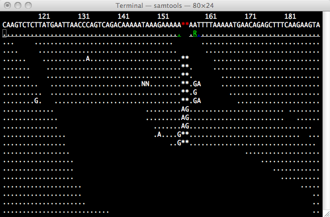
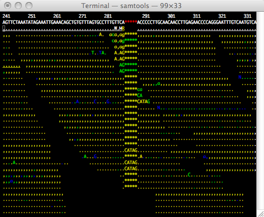

Text Alignment Viewer
Although from pileup output we can get a rough idea about how well reads are aligned, closer investigation requires a descent alignment viewer. SAMTools implements a very simple text alignment viewer based on the GNU ncurses library.
This alignment viewer works with short indels and shows MAQ
consensus. It uses different colors to display mapping quality or base
quality, subjected to users' choice. SAMTools viewer is known to work
with an 130GB alignment swiftly. Due to its text interface, displaying
alignments over network is also very fast. Here are two screenshots of
two pieces of alignments:

